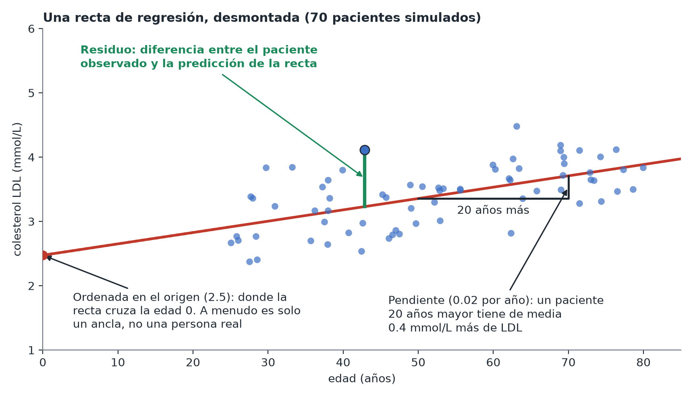

¿Qué es la regresión?
En pocas palabras: la regresión ajusta la «mejor» recta (o curva) a tus datos y describe cómo tiende a cambiar una variable cuando cambia otra.
El caso más sencillo
Representa la edad (eje x) frente al colesterol LDL (eje y) de los 300 pacientes de Mia. La regresión encuentra la recta que mejor se ajusta a la nube de puntos, descrita por dos números: el punto donde la recta corta el cero (la ordenada en el origen, o intercept) y lo empinada que sube o baja (la pendiente, o coeficiente). «El LDL sube 0.02 mmol/L por cada año más de edad» es una pendiente, dicho en lenguaje llano.

Por qué es más que «solo una recta»
La regresión no se limita a un predictor. Puedes incluir en el mismo modelo el estado de portador, el sexo y la edad, y cada coeficiente te dice entonces «el efecto de esta variable, manteniendo fijas las demás». Esto es más informativo que una comparación simple entre dos grupos: separa «llevar la variante elevó el LDL» de «los portadores de esta muestra eran, casualmente, mayores».
Vocabulario clave
- Variable de respuesta (resultado) / variable dependiente: lo que intentas explicar o predecir (el colesterol LDL).
- Predictor(es) / variable(s) independiente(s): lo que crees que podría explicarlo (el estado de portador, la edad).
- Coeficiente: cuánto cambia el resultado por cada unidad de cambio en un predictor, manteniendo fijos los demás.
- Residuo: la diferencia entre lo que el modelo predijo para un dato y lo que se observó. Los buenos modelos tienen residuos pequeños y sin patrones.
Por qué este skill se apoya tanto en la regresión
La regresión reproduce exactamente las pruebas t, el ANOVA y las pruebas chi-cuadrado (consulta Pruebas como regresiones), se extiende de forma natural a resultados sí/no o de recuento (consulta GLM) y es la herramienta estándar tanto para la predicción como para la estimación de efectos causales (Módulo 5). El mismo marco cubre la mayor parte del material de este curso.